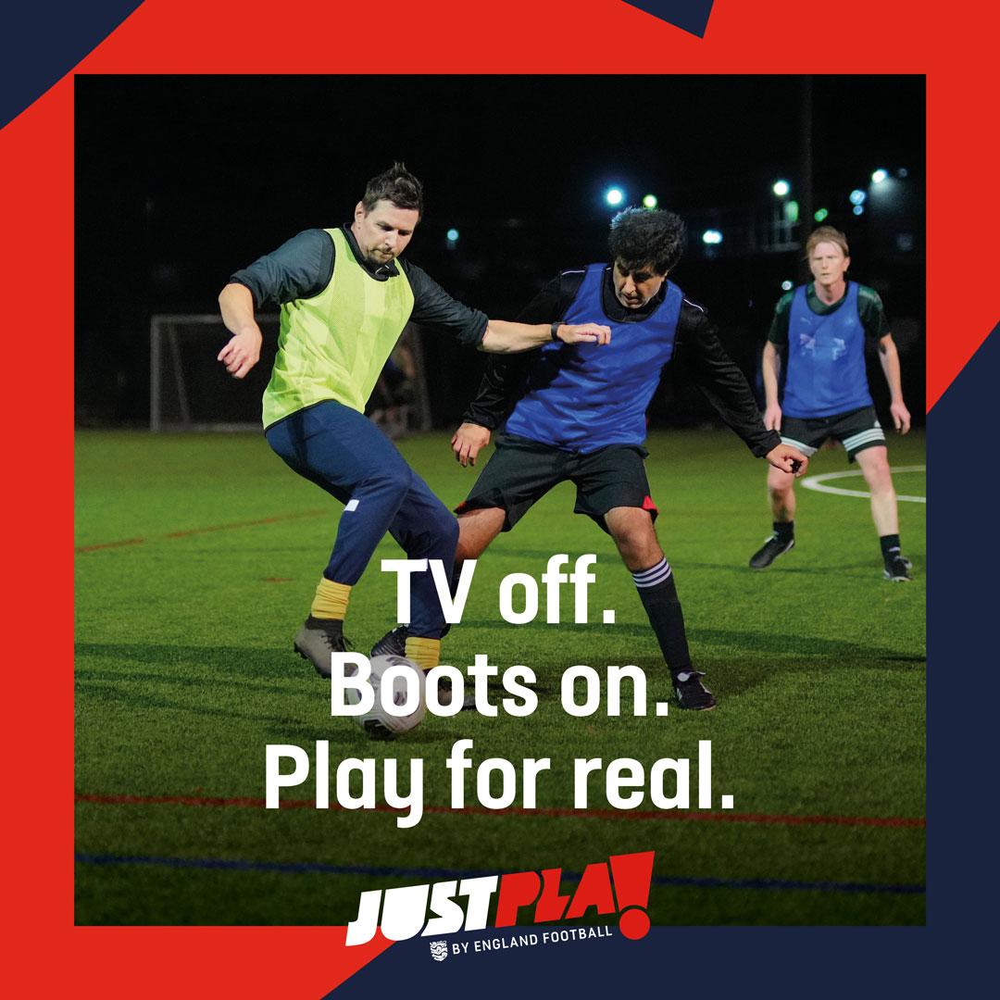

Brundall Bullfinches FC Partners with Just Play Initiative, Norfolk FA, and England Football to Promote Grassroots Football
January 7, 2025
We are excited to announce a new partnership with the Just Play initiative, Norfolk FA, and England Football to promote grassroots football in our community. This collaboration aims to provide accessible football sessions for all, regardless of age or ability.
The Just Play initiative offers informal football sessions designed to encourage participation and enjoyment of the game. These sessions are open to everyone, providing a welcoming environment for individuals to get active and engage with others in the community. Please note that there is a small fee to participate in these sessions.
Norfolk FA and England Football are committed to supporting local clubs and initiatives that foster inclusivity and community engagement. Through this partnership, we aim to enhance the football experience for all participants and contribute to the growth of the sport at the grassroots level.
Born out of casual evening sessions initially, our team still runs these sessions today. Now, we collaborate with the FA and the Just Play initiative to offer these sessions specifically for males aged 16+.
We welcome new participants to join in the fun! Whether you're looking for a casual kickabout or are interested in getting more involved with the team, we're always excited to see new faces. Feel free to get in touch with us for more details or to join one of our upcoming sessions.